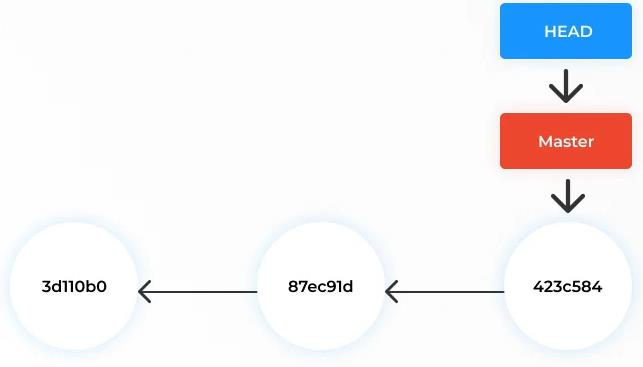

Markdown Cheat Sheet
Every Markdown feature you’re likely to need on GitHub, with the raw syntax on the left and how it actually renders on the right.
Headings
Raw
# Heading 1
## Heading 2
### Heading 3
#### Heading 4Rendered
Heading 1
Heading 2
Heading 3
Heading 4
Emphasis
Raw
**bold text**
*italic text*
***bold and italic***
~~strikethrough~~Rendered
bold text
italic text
bold and italic
strikethrough
Blockquotes
Raw
> This is a quote.
>
> It can span multiple lines.Rendered
This is a quote.
It can span multiple lines.
Unordered lists
Raw
- First item
- Second item
- Third itemRendered
- First item
- Second item
- Third item
Ordered lists
Raw
1. First step
2. Second step
3. Third stepRendered
- First step
- Second step
- Third step
Nested lists
Raw
- Module 1
- Concepts
- GitHub basics
- Module 2
- Local GitRendered
- Module 1
- Concepts
- GitHub basics
- Module 2
- Local Git
Task lists (GitHub-flavored)
Raw
- [x] Create GitHub account
- [x] Write README
- [ ] Open a Pull RequestRendered
Links
Raw
[link text](https://github.com)
[link with title](https://github.com "GitHub")
<https://github.com>Reference-style links
Raw
Check out [GitHub][gh] for more.
[gh]: https://github.comRendered
Check out GitHub for more.
Images
Raw
Rendered

Inline code
Raw
Run `git status` to check your repository.Rendered
Run git status to check your repository.
Fenced code blocks
Raw
```python
def hello():
print("hello")
```Rendered
def hello():
print("hello")Tables
Raw
| Module | Topic |
|--------|-------------|
| 1 | Concepts |
| 2 | Local Git |Rendered
| Module | Topic |
|---|---|
| 1 | Concepts |
| 2 | Local Git |
Table alignment
Raw
| Left | Center | Right |
|:-----|:------:|------:|
| a | b | c |Rendered
| Left | Center | Right |
|---|---|---|
| a | b | c |
Horizontal rule
Raw
Above the line
---
Below the lineRendered
Above the line
Below the line
Line breaks
Raw
First line.\
Second line, no blank line between.Rendered
First line.
Second line, no blank line between.
Footnotes (GitHub-flavored)
Raw
Git was created in 2005[^1].
[^1]: By Linus Torvalds.Rendered
Git was created in 20051.
Emoji shortcodes (GitHub-flavored)
Raw
Nice work! :tada: :rocket:Rendered (as GitHub displays it)
Nice work! 🎉 🚀
Mentions and issue references (GitHub only)
These only become clickable links when viewed on GitHub.com — they render as plain text everywhere else (including this page).
@dktanwar please review
See issue #12 for detailsOn GitHub, @username notifies that person, and #12 automatically links to issue or PR number 12 in the same repository.
Footnotes
By Linus Torvalds.↩︎